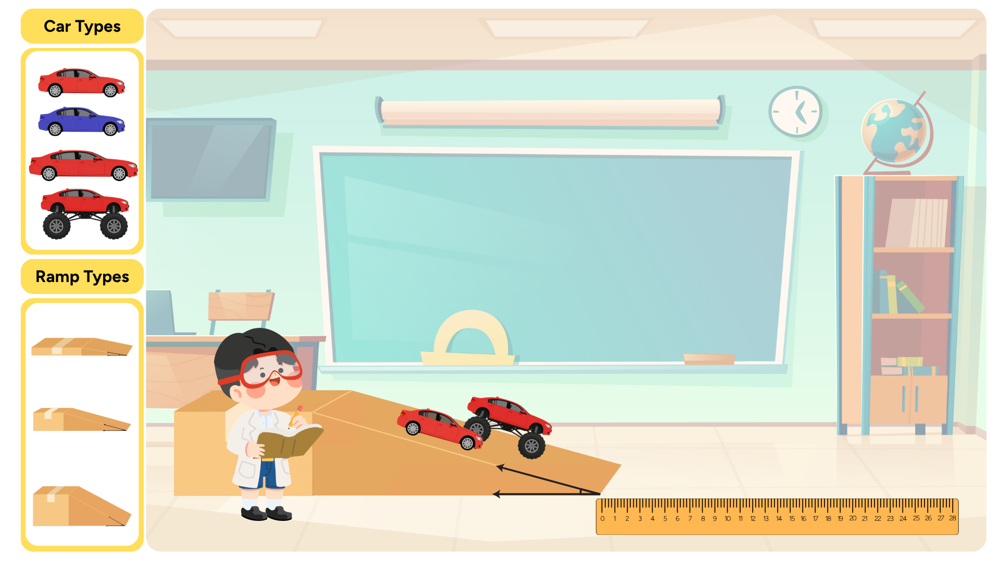
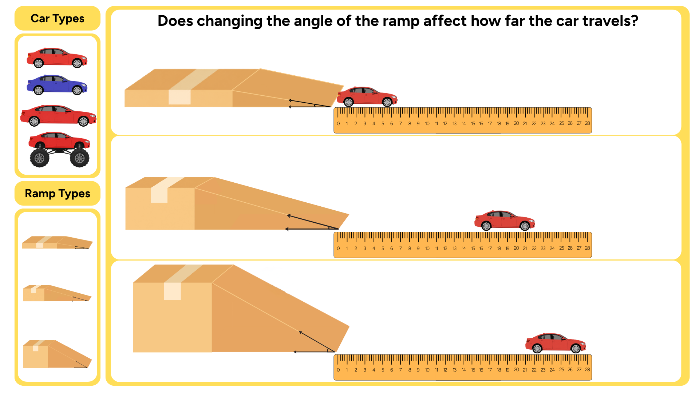
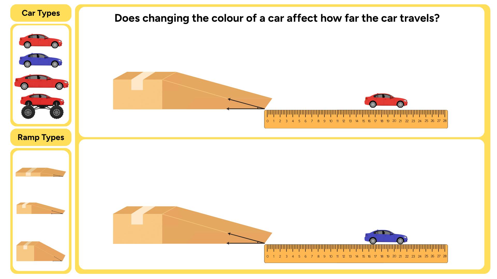
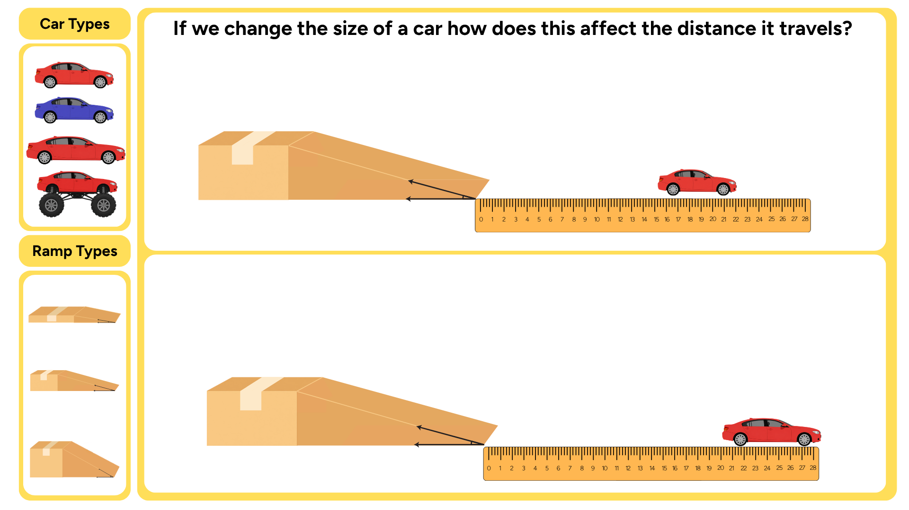
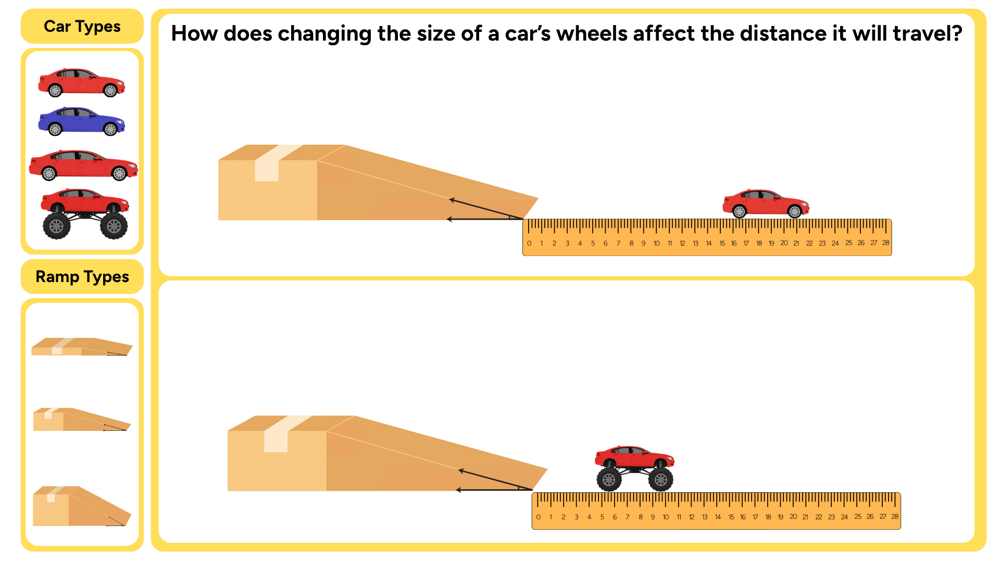

A test scientists carry out to answer a testable question by changing one thing and measuring the effect it has on something else.
Question
Something you are curious about after making an observation. In science, a good question leads to an investigation.
Prediction
An educated guess about what the result of an experiment will be, based on your knowledge of the relationship between two things.
Reasoned Prediction
A prediction that is based on scientific knowledge and evidence, explaining why a particular outcome is expected.
Measure
To observe and record the effect that a change has on something. This is the result you collect during an experiment using a tool or method such as a ruler, stopwatch, or scale.
Change
To make something different from what it was. In an experiment, this is the one thing you deliberately adjust to see what effect it has on something else.
Testable question
A question that can be answered by doing an experiment where you change something and measure the effect it has on something else.
Untestable question
A question that cannot be answered through an experiment, usually because it is based on personal opinion or cannot be measured.
Teacher tools
Jump to an activity
Teacher mode changes navigation only. Student answers are not deleted.
Lesson 1
Questioning and Predicting
Asking questions and making predictions like a scientist
Learn to ask testable questions and make reasoned predictions for a scientific experiment
Success criteria
I can classify whether a question is testable or untestable
I can write a testable question
I can make predictions and give a reason for my choice
Think like a scientist
See, Think, Wonder
As scientists we are all curious. We observe the world around us and ask questions
about how the world works. A way to come up with questions is to use a thinking tool called
See, Think, Wonder. Practice making observations
and asking questions by following these steps:
SeeWhat do you notice?
ThinkWhat do you think is happening?
WonderWhat questions do you have?
Observe the Experiment
Look at the image below. Practice making observations
and asking questions by following See, Think, Wonder.

How can we turn our wonderings into testable questions?
What is a testable question?
A testable question can be answered by changing one thing and measuring
the effect it has on something else. It explores relationships between
two different things.
Testable questions
Can be answered by doing an experiment.
Explore the relationship between two things.
One thing is changed and its effect on another thing is measured.
Different scientists should reach a similar answer when conducting
the same experiment.
Untestable questions
May be answered using personal opinions, values or beliefs.
Do not investigate the effect of changing one thing.
Cannot be answered using measurable evidence from an experiment.
Different people may provide different answers.
Look at the following examples from our See, Think, Wonder exercise.
Testable question
Does changing the angle of the ramp affect how far the car travels?
✓
Is something being changed?
Yes. The angle of the ramp is changed.
✓
Can the effect be measured?
Yes. Measure the distance the car travels.
Untestable question
Does changing the angle of the ramp affect how much fun the car has?
✓
Is something being changed?
Yes. The angle of the ramp is changed.
×
Can the effect be measured?
No. Fun is based on personal opinion.
Testable question
What will changing the size of the car do to the distance the car travels?
✓
Is something being changed?
Yes. The size of the car is changed.
✓
Can the effect be measured?
Yes. Measure the distance the car travels.
Untestable question
How far does the red car travel?
×
Is something being changed?
No. Nothing is changed.
✓
Can the effect be measured?
Yes. The distance the car travels can be measured.
Completed — next activity unlocked.
Testable or Non-testable?
Completed — next activity unlocked.
How do we write testable questions?
A testable question describes what is being changed and what is being measured.
Testable questions can begin with words such as
What, How,
Does and If.
Your turn
Create a testable question
Think back to what you were curious about during the
See, Think, Wonder activity.
Spin the wheel to choose a question structure.
WhatHowDoesIf
Spin the wheel to receive a question structure.
Your question structures
Your question structures will appear here.
Completed — next activity unlocked.
Writing a Reasoned Prediction
The next step after writing a testable question is to make a prediction of what the result will be and support this with a reason.
This is called making a reasoned prediction.
In a reasoned prediction you make an educated guess that is based on your knowledge about the relationship between two things.
You can use a graphic organiser to guide you in writing a reasoned prediction.
Testable question:
Change this
Measure this
Relationship:
Causeincrease / decrease
with / without
condition 1 versus condition 2
Effect (result)increase / decrease / stay the same
Prediction:
If I do this
then this will happen
Reason:
This is because…
Reasoned prediction:
If I do this then this will happen. This is because of this.
Completed — next activity unlocked.
Now build your own reasoned prediction
Use the organiser below to construct a reasoned prediction
for your investigation question.
Watch these videos below to learn how to use the reasoned prediction builder.
Video guide
Completed — next activity unlocked.
Testing our reasoned predictions
We test our reasoned predictions by conducting an experiment.
You will learn how to design an experiment in the next lesson.
Below are results from experiments using cars and ramps.
Examine each set of results and decide whether the evidence
supports or does not support
the reasoned prediction.
Example 1
Changing the ramp angle
Testable question
Does changing the angle of the ramp affect how far
the car travels?
Reasoned prediction
If I increase the angle of the ramp, then this will
increase how far the car will travel. This is because
the car gains more speed travelling down the ramp.
Experiment results

Do the results support the reasoned prediction?
Example 2
Changing the car colour
Testable question
Does changing the colour of a car affect how far
the car travels?
Reasoned prediction
If I change the colour of the car from blue to red,
then the distance the car travels will stay the same.
This is because colour does not affect how fast the
car travels down the ramp.
Experiment results

Do the results support the reasoned prediction?
Example 3
Changing the size of the car
Testable question
If we change the size of a car, how does this affect
the distance it travels?
Reasoned prediction
If I increase the size of the car, then the distance
the car travels will decrease. This is because bigger
objects stop rolling sooner.
Experiment results

Do the results support the reasoned prediction?
Example 4
Changing the wheel size
Testable question
How does changing the size of a car’s wheels affect
the distance it will travel?
Reasoned prediction
If I increase the size of the car’s wheels, then the
distance the car travels will increase. This is because
bigger wheels will make it travel faster.
Experiment results

Do the results support the reasoned prediction?
Excellent evidence checking!
You have tested all four reasoned predictions against
experimental results.